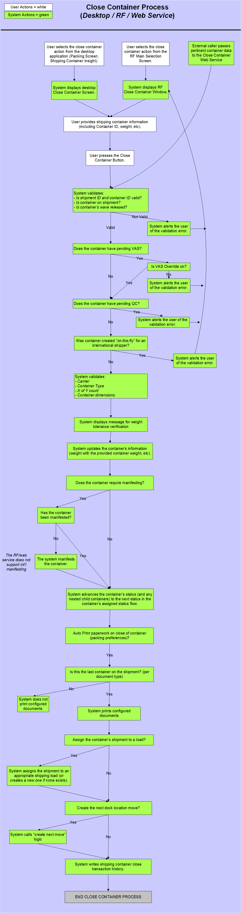
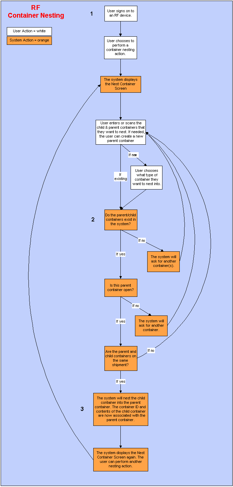
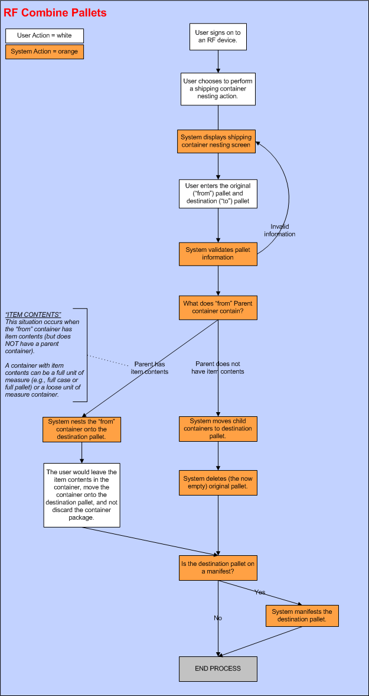

** Process Flows **
- Close Container (Full Screen, RF, Web Service)
This process diagram illustrates the close container process as done in the full-screen application, RF device, and via a web service.

This process diagram illustrates how the system uses container nesting on the RF device.

Nesting allows you to pack one container into a larger one. Nesting on an RF device works functionally the same as nesting in the Packing Screen. When you nest a container, the system associates the nested container ID and its contents with the container that you nested into. Note that the containers that you are trying to nest must be on the same shipment. Nesting is especially helpful when customers order pre-packed cases and some loose items; the case can be nested into a larger container that also accommodates the loose pieces. Nesting could also be used to build pallets. The containers on the pallet would be "nested" into the pallet.
To start the container nesting process on the RF, the user would first need to have both the parent container and child container that you want to nest. The user would then log onto the RF device and choose to perform a container nesting action. Next, the user scans into the RF device the container ID's of both the parent container and the child container. The parent container that you want to nest something into can be either an existing container or a new container.
When the system begins the process of nesting the containers, it first needs to perform a few validations:
Once the system completes these validation successful, the system will nest the child container into the parent container. The container ID and contents of the child container are now associated with the parent container.
